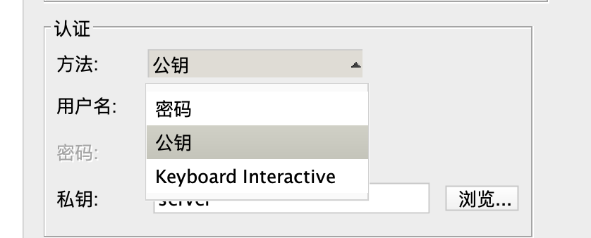

Https、SSH
本文记录了集合常见的网络校验方式。
一、SSH
远程登录主机，如果是明文传入校验密码，通过抓包可以就可以获取，显然不可取，正确的方式应该是把密码进行加密。由此诞生通过公私密钥的方式给密码进行加密的方式 SSH，SSH 具体来说也有几种不同的方式。
1 | |
基于密码的验证
- 远程主机收到用户的登录请求，把自己的公钥发给client。
- client使用这个公钥，将登录密码加密后，发送回来。
- 远程主机用自己的私钥，解密登录密码，如果密码正确，就同意用户登录。
但是这里有个风险，中间人截获公钥。自己伪造了公钥，给客户端，然后把用户发送的数据通过中间人的私钥解密，从而破解了用户密码。
实际上，当你第一次登录成功服务器的时候，系统会出现下面的提示：
The authenticity of host ‘host (xx.xx.xx.xx)’ can’t be established.
RSA key fingerprint is xx:xx:…….:xx.
Are you sure you want to continue connecting (yes/no)?
意思就是是否要信任这个公钥，因为鬼知道是不是主机的公钥。这里给到一个公钥的fingerprint可以去主机后台去校验。当你输入 yes 之后，就表示信任，当远程主机的公钥被接受以后，它就会被保存在文件$HOME/.ssh/known_hosts之中。下次再连接这台主机，系统就会认出它的公钥已经保存在本地了，从而跳过警告部分，直接提示输入密码。
在这个过程中，密码本身并没有被加密，而是以明文的形式发送给服务器。然而，由于整个交互过程都在 SSH 的安全通道中进行，所以密码在传输过程中是被加密的，从而防止了在网络中被窃取。这就是为什么虽然基于密码的验证方式相对简单，但仍然可以提供一定程度的安全性。
基于公钥的验证
也叫公钥登录，我们常用的 github ，往 github setting里面设置 id_rsa.pub就是这种方式的操作。这是一种更安全的身份验证方式，它需要一对公钥和私钥。公钥存储在远程服务器上，而私钥保管在本地。只有拥有私钥的用户才能登录到服务器。这种方式的安全性比基于密码的验证要高。
- 生成密钥对：首先在客户端生成一个密钥对，包括一个公钥和一个私钥。公钥可以公开，但私钥必须保密。
- 上传公钥到服务器：然后，将公钥上传到服务器，并添加到~/.ssh/authorized_keys文件中。这个文件存储了所有允许SSH密钥认证的公钥。
- 客户端请求连接：当客户端请求与服务器建立SSH连接时，客户端会发送一个包含公钥的消息给服务器。
- 服务器验证公钥：服务器会检查客户端发送的公钥是否在~/.ssh/authorized_keys文件中。如果公钥存在，服务器就知道客户端是一个可信的用户。
- 服务器发送挑战消息：服务器然后生成一个随机数（也被称为挑战），并将其发送给客户端。
- 客户端响应挑战：客户端使用私钥对这个随机数进行加密，然后将加密的随机数发送回服务器。这个加密的随机数也被称为响应。
- 服务器验证响应：服务器使用公钥解密响应，如果解密后的随机数与最初发送的随机数匹配，那么服务器就认为客户端是一个合法用户，并允许建立SSH连接。
注意：远程主机的/etc/ssh/sshd_config这个文件，检查下面几行前面”#”注释是否取掉。
RSAAuthentication yes
PubkeyAuthentication yes
AuthorizedKeysFile .ssh/authorized_keys
如果没有，ssh 公钥登录方式是无效的，需要打开注释，然后重启远程主机的ssh服务。
Pem私钥登录
当你购买一个 ECS（Elastic Compute Service）实例或者类似的云服务器时，有时会提供一个 .pem 文件。这个 .pem 文件实际上是包含了私钥的文件，通常用于SSH连接到你的云服务器。公钥会被安装在你的 ECS 实例上（~/.ssh/authorized_keys），而私钥则会被提供给你（通常以 .pem 文件的形式）。你可以使用这个私钥文件来 SSH 登录到你的 ECS 实例。
.pem私钥登录和基于公钥的验证方式并没有本质上的区别，它们都是公钥身份验证方式的一部分。.pem文件只是一种用于存储私钥的文件格式。唯一的不同是免去了client 自己生成密钥对的步骤
小节：SSH校验核心是基于非对称加密的模型，其中密码校验无法保证公钥是否是合法的。如果是基于密钥对配置的方式，需要提前在服务器~/.ssh/authorized_keys中配置客户端公钥。在 https 站点通信中，这些都不是合适的方式。https 采用了证书，证书是个集合了多种算法保证通信合法的机制。
二、HTTPS
HTTPS相较于SSH解决的问题：
HTTPS的一个主要优点是它使用了证书来验证服务器的身份。这个证书由受信任的CA签发，这意味着，只要客户端信任这个CA，它就可以信任来自服务器的证书。这样，客户端就无需预先知道服务器的公钥，也无需手动验证服务器的公钥（ssh 密码登录是无法确定公钥是否合法，通过fingerprint 手动确认）。这简化了HTTPS的使用，使得它能够广泛应用在互联网上。
另外，HTTPS还提供了完整性保护，这意味着，即使数据被中间人截获，也无法修改这些数据。这是因为HTTPS使用了消息认证码（MAC，摘要算法+salt）来保证数据的完整性。而SSH虽然也提供了完整性保护，但并不是所有的SSH实现都支持这个特性。
“我们知道，摘要算法用来确保数据没有被篡改，非对称加密算法可以对数据进行加解密，签名算法可以确保数据完整性和抗否认性，把这些算法集合到一起，并搞一套完善的标准，这就是数字证书。”
HTTPS 握手流程

- 客户端Hello：客户端发起连接请求，并发送一个客户端Hello消息给服务器。这个消息包括了客户端支持的SSL/TLS版本，支持的加密套件列表（包括密钥交换算法，加密算法，MAC算法等），以及一个客户端随机数（ClientRandom）。这个随机数是通过安全的随机数生成算法得到的。
- 服务器Hello：服务器接收到客户端Hello消息后，会选择一个客户端也支持的SSL/TLS版本，一个加密套件，然后生成一个服务器随机数（ServerRandom），并把这些信息发送给客户端。
- 服务器证书：服务器接下来会发送它的公开证书给客户端。这个证书包含了服务器的公钥，以及一些服务器的信息。这个证书是由一个受信任的证书颁发机构（CA）签发的，签发过程中使用了数字签名算法（如MD5RSA或ECDSA）。
- 验证服务器证书：客户端接收到服务器证书后，会用预先安装在系统中的CA证书来验证服务器证书的有效性。验证过程中，会使用对应的数字签名验证算法。
- 生成预主密钥：客户端会生成一个预主密钥（Pre-Master Secret），这个也是一个随机数。然后用服务器的公钥对预主密钥进行加密，再发送给服务器。这个过程中，使用了公钥加密算法（如RSA）。
- 生成主密钥：客户端和服务器都使用ClientRandom，ServerRandom和Pre-Master Secret来生成主密钥（Master Secret）。这个过程中，使用了密钥派生函数。
- 生成会话密钥：客户端和服务器使用主密钥生成会话密钥，这些密钥用于实际的数据加密和解密。这个过程中，使用了对称加密算法（如AES或ChaCha20）和MAC算法（如SHA256）。
申请和给 web 服务配置 ssl证书的一般流程
- 购买或获取SSL证书：首先，你需要从一个证书授权中心（如GlobalSign，Let’s Encrypt等）购买或获取一个SSL证书。如果你只是想要加密你的网站，你可以使用Let’s Encrypt免费获取一个证书。如果你需要验证你的企业或组织的身份，你可能需要购买一个组织验证（OV）或扩展验证（EV）SSL证书。
- 生成CSR（证书签名请求）：你需要在你的服务器上生成一个CSR。这个CSR包含了你的公钥和一些组织信息。你需要将这个CSR发送给证书授权中心，以便他们可以为你生成一个证书。
- 验证域名和组织信息：证书授权中心会验证你的域名和（如果需要的话）你的组织信息。这可能需要一些时间，取决于你选择的证书类型和证书授权中心。
- 安装证书：一旦你的证书被生成，你就可以将它安装到你的服务器上。这通常涉及到将证书文件上传到服务器，并在你的Web服务器软件（如Apache或Nginx）的配置中指定证书文件的位置。
- 更新你的Web服务器配置：你可能需要更新你的Web服务器配置，以启用HTTPS并指定你的证书文件的位置。
- 测试你的配置：最后，你应该测试你的配置，确保HTTPS已经被正确地启用，而且你的证书被正确地安装。你可以通过访问你的网站并检查浏览器的安全指示来进行这个测试。
App客户端对证书的验证
在iOS中，HTTPS请求的握手过程主要通过底层的Secure Transport库来处理，这个库提供了基于TLS和SSL的安全连接功能。在更高层面，像NSURLConnection和NSURLSession这样的API也提供了对HTTPS的支持。具体来说在HTTPS握手阶段，服务器会向客户端提供一个证书。客户端需要验证这个证书的有效性。这个过程被封装在didReceiveChallenge方法中。
当客户端接收到服务器的证书时，会创建一个NSURLAuthenticationChallenge对象，并调用代理的didReceiveChallenge方法。在这个方法中，你可以根据服务器提供的证书和验证方式（包含在NSURLAuthenticationChallenge对象中），来决定如何处理服务器的证书。
在大多数情况下，客户端会采用这种默认的验证方式服务器发送的证书。然而，在某些情况下，例如自签名证书或者私有CA颁发的证书，客户端可能需要采用不同的验证方式。在这种情况下，客户端可以指定其自己的验证方式。
completionHandler是一个回调函数，你需要在didReceiveChallenge方法中调用它，来告诉系统你决定如何处理服务器的证书。你可以传入一个NSURLSessionAuthChallengeDisposition枚举值和一个NSURLCredential对象。
NSURLSessionAuthChallengeDisposition枚举值表示你决定如何处理服务器的证书。例如，你可以选择信任服务器的证书（使用NSURLSessionAuthChallengeUseCredential），或者取消请求（使用NSURLSessionAuthChallengeCancelAuthenticationChallenge）。
NSURLCredential对象表示你提供的凭据。如果你选择信任服务器的证书，你需要创建一个NSURLCredential对象，并且传入completionHandler。
下列代码evaluateServerTrust方法中是指定了证书校验策略，SecPolicyCreateSSL创建的策略比SecPolicyCreateBasicX509创建的策略更严格，因为它会额外验证证书的主机名。代码中如果请求没有获取到请求的 host就用基本的校验策略。
1 | |
https握手： https://www.ruanyifeng.com/blog/2014/02/ssl_tls.html
加密算法： https://www.liaoxuefeng.com/wiki/1252599548343744/1255943717668160